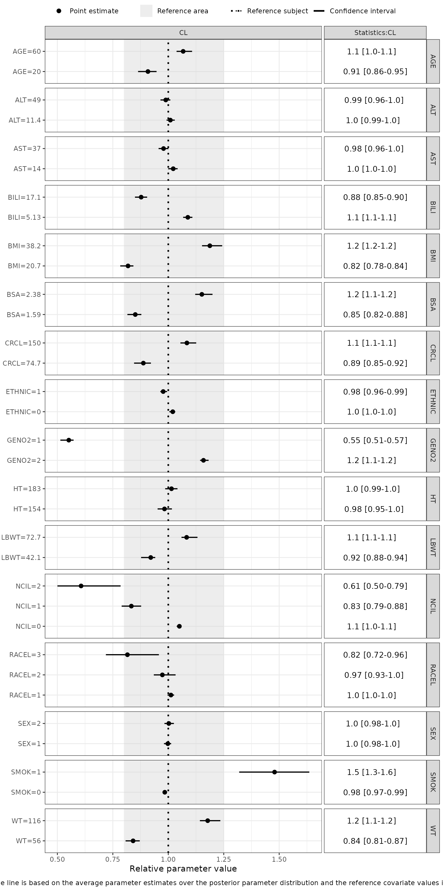
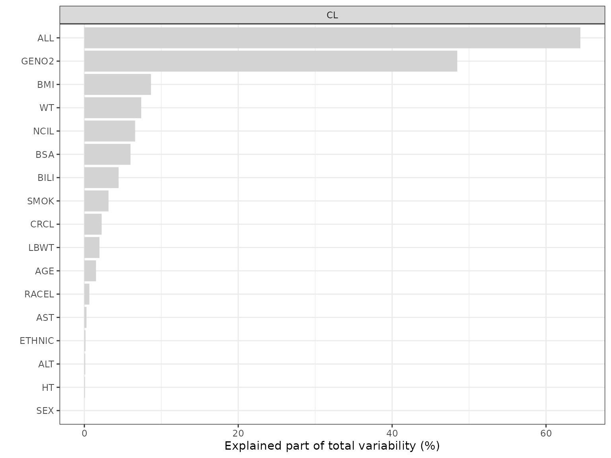

1. Quickstart: 5-Minute FREM Workflow
Part1-quick-start.RmdThis vignette provides a copy-pasteable example of the core PMXFrem workflow. We will take a converged FREM model, extract its parameters, visualize the covariate effects (Forest Plot), and calculate the explained variability.
1. Load Package and Setup Paths
We use the example files provided within the package’s extdata directory.
library(PMXFrem)
library(ggplot2)
theme_set(theme_bw())
# Define paths to example data and models
modDevDir <- system.file("extdata", "SimNeb", package = "PMXFrem")
mod_path <- file.path(modDevDir, "run31.mod")
ffemData <- system.file("extdata", "SimNeb/DAT-2-MI-PMX-2-onlyTYPE2-new.csv", package = "PMXFrem")
# Setup a temporary directory for outputs (CRO Standard Practice)
td <- tempdir()
# Dynamically extract actual covariate names from the model (e.g., AGE, SEX, etc.)
cov_names <- getCovNames(mod_path)2. Generate the FFEM Model
The primary entry point is createFFEMmodel(). This function automates the creation of the individual covariate coefficients and the corresponding NONMEM control stream.
# Parameters in the model associated with covariates
parNames <- c("CL", "V", "MAT")
ffemMod <- createFFEMmodel(
runno = 31,
baserunno = 30,
modDevDir = modDevDir,
dataFile = ffemData,
parNames = parNames,
numNonFREMThetas = 7,
numSkipOm = 2,
newDataFile = file.path(td, "vpcData31.csv"),
ffemModName = file.path(td, "run31_ffem.mod"),
quiet = TRUE
)
# Preview the first 10 lines of the generated NONMEM code
head(ffemMod, 10)
#> [1] ";; 1. Based on: 25"
#> [2] ";; 2. Description:"
#> [3] ";; New simulated data set"
#> [4] ";; 3. Label:"
#> [5] ";; SimVal base model"
#> [6] ";------------------------------------------------------------------------------"
#> [7] "$PROBLEM FFEM model"
#> [8] "$INPUT NO ID STUDYID TAD TIME DAY AMT RATE ODV DV EVID BLQ DOSE"
#> [9] " FOOD FORM TYPE WT HT LBWT BSA SEX RACE AGE AST ALT BILI"
#> [10] " CRCL BMI NCI GENO2 ETHNIC SMOK RACEL NCIL"3. Extract Parameter Estimates
Once the FREM model has converged, we can extract the base parameters, adjusted variances (Omega prim), and residual errors (Sigma) using fremParameterTable().
table_data <- fremParameterTable(
runno = 31,
modDevDir = modDevDir,
numNonFREMThetas = 7,
numSkipOm = 2,
thetaNum = 2:7,
omegaNum = c(1, 3, 4, 5),
sigmaNum = 1,
quiet = TRUE
)
# View the formatted estimates
print(table_data$parameterTable)
#> Type Parameter Estimate
#> 1 THETA THETA2 6.1451400
#> 2 THETA THETA3 122.5250000
#> 3 THETA THETA4 1.8869400
#> 4 THETA THETA5 0.6703740
#> 5 THETA THETA6 -0.0522225
#> 6 THETA THETA7 0.1211320
#> 7 OMEGA OMEGA1 (SD) 0.2328087
#> 8 OMEGA OMEGA3 (SD) 0.2553093
#> 9 OMEGA OMEGA4 (SD) 0.2281953
#> 10 OMEGA OMEGA5 (SD) 0.2062154
#> 11 SIGMA SIGMA1 (SD) 0.17604294. Covariate Effects (Forest Plot)
To visualize the covariate effects, we first set up the covariate dataframe using our extracted names. We then pull bootstrap samples for uncertainty and plot using the PMXForest package.
# 1. Setup the covariate matrix for the forest plot
data <- data.table::fread(ffemData)
dfCovsForest <- PMXForest::createInputForestData(
PMXForest::getCovStats(data,cov_names$orgCovNames,probs=c(0.05,0.9),missVal=-99),
iMiss =-99
)
# 2. Define the parameter function (No ETAs needed for the forest plot)
funcList_forest <- list(
function(basethetas, covthetas, dfrow, ...) {
basethetas[2] * exp(covthetas[1])
}
)
# 3. Get bootstrap samples for uncertainty
extFile <- file.path(modDevDir, "run31.ext")
bsFile <- file.path(modDevDir, "bs31.dir/raw_results_run31.csv")
set.seed(123)
samples <- PMXForest::getSamples(bsFile, extFile = extFile, n = 25)
# 4. Generate covariate labels
formatted_labels <- generateCovNames(dfCovsForest)
# 5. Generate Forest Plot Data
dfresFREM <- getForestDFFREM(
dfCovs = dfCovsForest,
covNames = cov_names$covNames,
cdfCovsNames = formatted_labels,
functionList = funcList_forest,
functionListName = "CL",
numSkipOm = 2,
numNonFREMThetas = 7,
dfParameters = samples,
quiet = TRUE
)
# 5. Render Forest Plot
PMXForest::forestPlot(dfresFREM, parameters = "CL")
5. Visualizing Explained Variability
Finally, we calculate how much variability in our parameters is explained by these covariates. We use the Delta Method (type = 0) for rapid calculation.
# 1. Setup the covariate matrix with actual covariate names
dfCovsEV <- setupdfCovs(mod_path, fremCovs = cov_names$orgCovNames)
# 1. Define the parameter function including ETAs for variability
funcList_var <- list(
function(basethetas, covthetas, dfrow, etas, ...) {
basethetas[2] * exp(covthetas[1] + etas[3])
}
)
# 2. Calculate variability
dfres_var <- getExplainedVar(
type = 0,
dfCovs = dfCovsEV,
cstrCovariates =c("ALL",cov_names$orgCovNames),
numNonFREMThetas = 7,
numSkipOm = 2,
functionList = funcList_var,
functionListName = "CL",
modDevDir = modDevDir,
runno = 31,
quiet = TRUE
)
# 3. Plot results
plotExplainedVar(dfres_var)